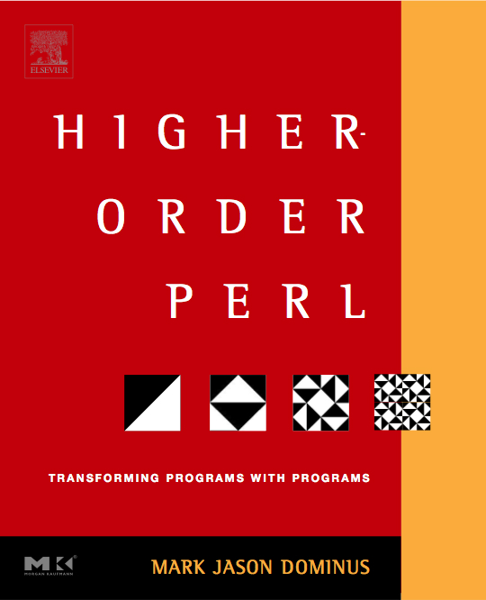

very iterators.
so lazy. amaze!
Maxim Vuets
@AmsterdamXpm
while (<$fh>) { ... }
while (readdir $dh) { ... }
while (my $row = $sth->fetchrow_arrayref) { ... }
while (my ($k, $v) = each %hash) { ... }
while (/^#(.*)\n/g) { ... }
my $n = rand();
my $meow = sub { say 'meow' };
$meow->();
sub make_utterer {
my $sound = shift;
return sub { say $sound };
}
my $purr = make_utterer('*purr~*');
$purr->();
sub make_utterer {
my @sounds = qw<meow purr hiss yowl>;
return sub { shift @sounds };
}
my $utter = make_utterer();
say while $_ = $utter->();
sub make_fibocat {
my @last = (0, 0);
return sub {
my $next = ($last[0] + $last[1]) || 1;
push @last, $next;
shift @last;
return 'meow ' x $next;
};
}
my $fibocat = make_fibocat();
say $fibocat->() for 1..10;

open my $food_fh, '<', 'food.txt';
my @food = <$food_fh>;
close $food_fh;
my @menu;
for my $option (@food) {
chomp $option;
next if length($option) <= 8;
$option = "super $option meow~";
push @menu, $option;
}
open my $menu_fh, '>', 'menu.txt';
print $menu_fh "$_\n" for @menu;
close $menu_fh;
Pros
- easy
- quick
- concerns separated
Cons
- memory bound
open my $food_fh, '<', 'food.txt';
open my $menu_fh, '>', 'menu.txt';
while (my $option = <$food_fh>) {
chomp $option;
next if length($option) <= 8;
$option = "super $option meow~";
print $menu_fh "$option\n";
}
close $menu_fh;
close $food_fh;
Pros
- constant memory
- same performance
Cons
- concerns mixed up
- troublesome to maintain

my $it = reader('food.txt');
$it = imap { "super $_[0] meow~" }
igrep { length($_[0]) <= 8 }
$it;
writer($it, 'menu.txt');
sub reader {
my ($file) = @_;
open my $fh, '<', $file;
return sub {
my $line = <$fh>;
chomp $line;
if (!defined $line) {
close $fh;
return undef;
}
return $line;
};
}
sub igrep(&$) {
my ($cb, $it) = @_;
return sub {
while (defined (my $val = $it->())) {
return $val if $cb->($val);
}
return undef;
};
}
sub imap(&$) {
my ($cb, $it) = @_;
return sub {
my $val = $it->();
return undef if !defined $val;
return $cb->($val);
};
}
sub writer {
my ($it, $file) = @_;
open my $fh, '>', $file;
while (defined (my $val = $it->())) {
print $fh "$val\n";
}
close $fh;
}
my $it = reader('food.txt');
$it = imap { "super $_[0] meow~" }
igrep { length($_[0]) <= 8 }
$it;
writer($it, 'menu.txt');
Pros
- concerns separated
- constant memory
- flexible code
- lazy
http://hop.perl.plover.com
maxim.vuets@gmail.com
@mvuets